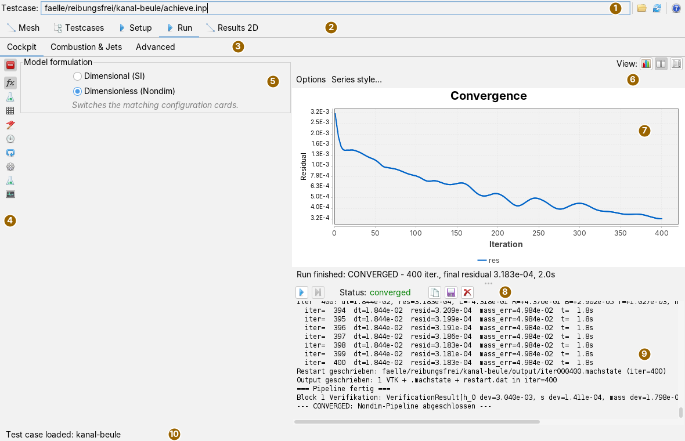
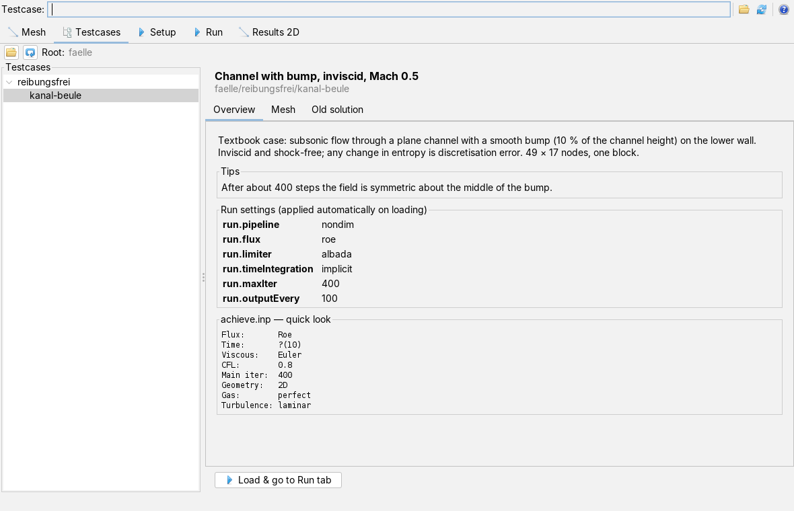
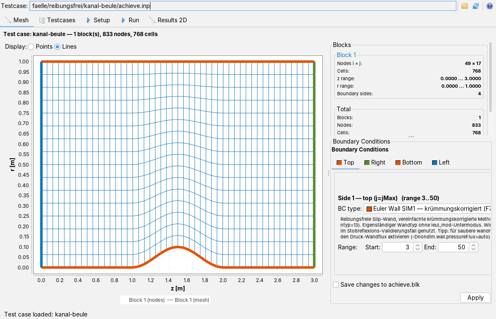
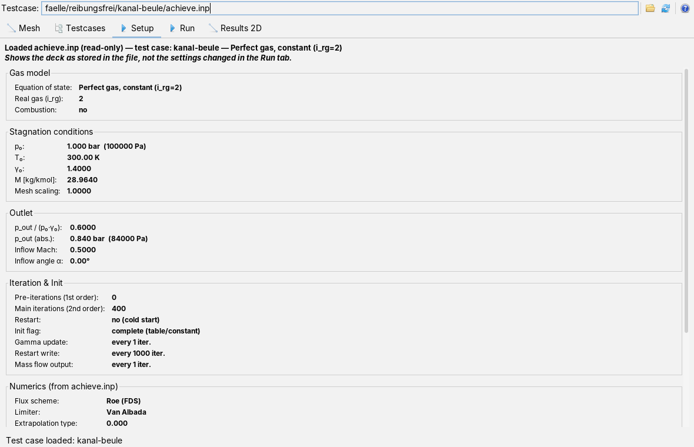
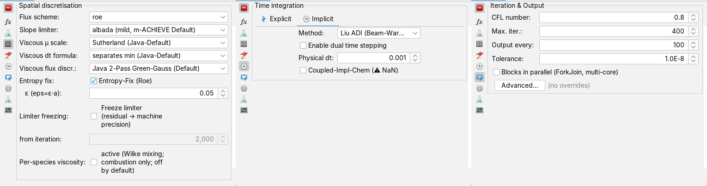
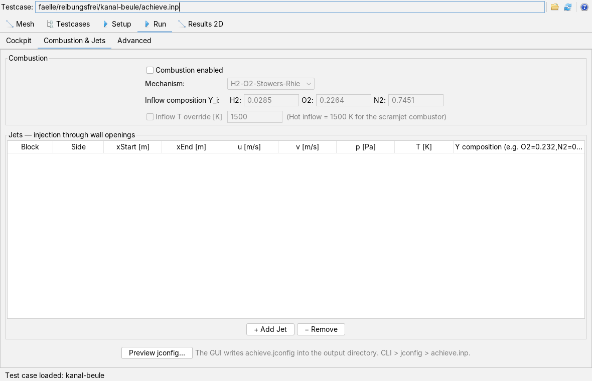
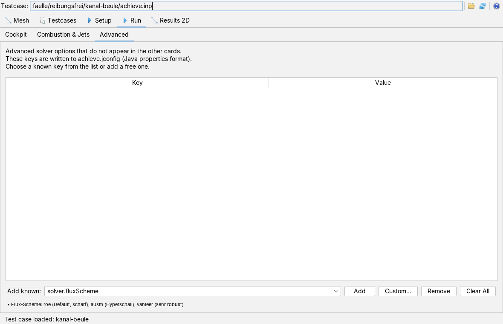
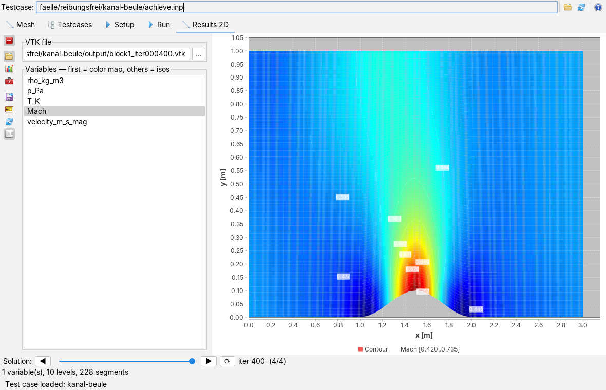
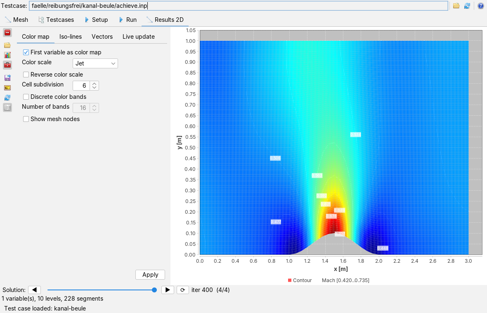

Using m-ACHIEVE
User page, as of 7 October 2026. How to load a case, inspect mesh and boundary conditions, set up the solver and run it, plot the result field, and what is written to the case directory along the way; plus the command line. The pictures are screenshots of the app with a small textbook case: inviscid subsonic flow through a channel with a bump on the lower wall, 49 × 17 nodes, 400 steps.
The window
Open the app from the Applications menu with Open test case (achieve.inp)… or with Alt+M. A case is a directory holding the input files in the format of the Fortran code: achieve.inp (control), achieve.grd (mesh), achieve.blk (blocks and boundaries), optionally gascomp.inp (gas composition) and testcase.properties (description and run settings).

The five main tabs in their order: Mesh, Testcases, Setup, Run and Results 2D. A loaded case reaches all tabs; the status line names its directory.
The header bar
| Icon | Tooltip | What happens |
|---|---|---|
 | Open achieve.inp or a test case directory | Choose an achieve.inp or a case directory. If the chosen directory has no achieve.inp, the status line says so and nothing is loaded. |
| Re-read the current test case | Load the case from the path field again, for instance after its files were changed outside the app. | |
 | Help: opens the docs for this app (like F1) | This page in the docs app. Without the docs app in the launcher, the status line gives the web address of the docs. |
The path field is read-only; it shows the achieve.inp of the loaded case.
Loading a case from the collection

- On the Testcases tab, choose a directory with (Choose the test case root directory). The app searches it to any depth: every directory containing an
achieve.inpbecomes a leaf, the directories above it become groups. Directories without a case below them do not appear.  (Rebuild the tree) reads the directory again, for instance after a new case was added.
(Rebuild the tree) reads the directory again, for instance after a new case was added.- Click a leaf. The right side shows title and directory of the case and three to five sub-tabs:
- Overview: description and tips from
testcase.properties, the run settings (run.*) in a box of their own, all other keys as reference values, and a quick look atachieve.inp(flux scheme, time integration, viscosity, CFL, iterations, geometry, gas, turbulence). - Mesh: the mesh of the case, for viewing only.
- Old solution: an existing
restart.datas a field; searched in the case directory, inoutput/and inReferenz/. - other_info: only if the file of that name exists (details of a reference run of the Fortran code).
- Comparison with the literature: only if
testcase.propertiesdefines a comparison (ref.compare); after a run the table sets simulation, exact solution and error side by side, Refresh evaluates again.
- Overview: description and tips from
- Load & go to Run tab loads the case and switches to the Run tab. The run settings from
testcase.propertiesare put into the cards and can still be changed by hand.
testcase.properties is a text file with lines key = value. title, description and tips are shown as text (\n breaks the line); run.pipeline (nondim or dimensional), run.flux, run.limiter, run.timeIntegration, run.cfl, run.maxIter, run.outputEvery, run.viscous and run.limiterFreezeAfter set up the interface; run.prop.<key> passes solver switches that have no control of their own. This is the file of the example case:
title = Channel with bump, inviscid, Mach 0.5 description = Textbook case: subsonic flow through a plane channel … tips = After about 400 steps the field is symmetric about the middle of the bump. run.pipeline = nondim run.flux = roe run.limiter = albada run.timeIntegration = implicit run.maxIter = 400 run.outputEvery = 100
A case can also be loaded without the collection, with in the header bar. The app then stays on the tab it is on.
Mesh and boundary conditions

The Mesh tab draws all blocks, each in its own colour, either as Points (nodes, the default) or Lines. The axes are in metres, using the mesh scaling from achieve.inp. The mouse wheel zooms; undoing the zoom returns to the axis limits typed into the chart's axis dialog.
At the top right are, per block, nodes, cells, extent and number of boundary sides, below them the total with length, height and aspect ratio. Underneath is the Boundary Conditions editor: one tab per position (Top, Right, Bottom, Left), and in it for each boundary side its type from the app's catalogue with a description, a sub-mode where there is one, and the range (start, end). The chosen side is highlighted in the mesh.
- Change the type, sub-mode or range of a side.
- Apply takes the change over. Without a tick at Save changes to achieve.blk it applies in memory only.
- With the tick the app rewrites
achieve.blkand enters changed mode switches (such asinf_mod,ioutb_mod) intoachieve.inp; before that it makes a one-time backupachieve.inp.bak.
The app does not generate meshes; it reads them from achieve.grd.
Viewing the input file

The Setup tab shows achieve.inp and, if present, gascomp.inp as a form: gas model, stagnation conditions (p₀, T₀, γ₀, molar mass, mesh scaling), outlet (pressure ratio and absolute pressure, inflow Mach number and angle), iteration and initialisation, numerics and the table of active species. It is read-only and shows the file as stored, not the settings changed on the Run tab.
Setting up the solver
The Run tab has three sub-tabs. On the Cockpit the settings sit on the left as cards in a vertical bar, the convergence chart and the log on the right. The top button  hides and shows the cards.
hides and shows the cards.
The first card,  Model formulation, chooses the solution path: Dimensional (SI) computes in SI units, Dimensionless (Nondim) in the convention of the Fortran code (the default). The choice decides which cards the bar shows:
Model formulation, chooses the solution path: Dimensional (SI) computes in SI units, Dimensionless (Nondim) in the convention of the Fortran code (the default). The choice decides which cards the bar shows:
| Icon | Card | What it sets |
|---|---|---|
 | Flow physics | Gas model (ideal gas, AGA8-DC92, GERG-2008), axisymmetric, local time stepping, viscous terms, turbulence model and turbulence intensity. Both paths. |
 | Spatial discretisation | Flux scheme, slope limiter, scales and discretisation of the viscous terms, entropy fix, freezing the limiter from a given iteration. Dimensionless only. |
 | Initial field | How the field is set before the first step (value from achieve.inp, rest, uniform inflow, linear between inlet and outlet, isentropic choked). Dimensionless only. |
 | Time integration | Explicit or implicit, the implicit method (Liu ADI or a Roe variant), dual time stepping with a physical time step. Dimensionless only. |
 | Solver (dimensional) | Solver type of the SI path and its limiters. Dimensional only. |
| Iteration and output | CFL number, maximum number of steps, output every n steps, tolerance, blocks in parallel; Advanced… opens a window with fine settings. Both paths. | |
 | Cascade and turbomachine | Corner treatment at block boundaries, rotational speed Ω, sliding mesh and mixing plane. Dimensionless only. |
| Turbulence tuning | Damping and capping of the eddy viscosity, Kato-Launder production, turbulence fields in the VTK. Dimensionless only. |
 | Monitoring and debugging | Convergence history as a CSV file, additional diagnostic output in the log. Dimensionless only. |

When a case is loaded, the app fills the cards with the values from achieve.inp (axisymmetry, gas model, viscosity, turbulence, method, CFL) and then with the run settings from testcase.properties; the log names both. Each card is at most 360 pixels wide and scrolls when it is taller than the window.
Running
- (Run) starts the run. It runs in the background; the interface stays usable. Chart and log are cleared first.
- During the run each step adds a point to the convergence chart (residual, semi-logarithmic, over the iteration) and a line to the log with step, time step, residual, mass error and elapsed time. The line under the chart shows the latest state, after the run the result.
 (Stop) asks the solver to stop after the current step.
(Stop) asks the solver to stop after the current step.- Status then reads converged, max iter reached, stopped by user, NaN error, failed or cancelled.
On the right above the chart, View chooses the split:  chart only,
chart only,  both,
both,  log only. Options shows settings for axes, lines, markers and legend to the right of the chart; Series style… opens a window of its own for colour, line width and shape of the curve. Next to the status are the log buttons:
log only. Options shows settings for axes, lines, markers and legend to the right of the chart; Series style… opens a window of its own for colour, line width and shape of the curve. Next to the status are the log buttons:  copies the whole log to the clipboard,
copies the whole log to the clipboard,  saves it as a text file (suggested name
saves it as a text file (suggested name machieve_log_YYYYMMDD_HHMM.txt),  clears the view. The same commands are in the log's context menu.
clears the view. The same commands are in the log's context menu.
output/ in the case directory. On the dimensionless path the app also writes the values chosen in the cards for limiter, initial field, flux scheme and implicit method back into achieve.inp, so that the file matches the run; before the first change it makes a one-time backup achieve.inp.bak. To keep a case unchanged, run a copy of it.Combustion and jets

The sub-tab Combustion & Jets switches combustion on, chooses the mechanism and the mass fractions of H₂, O₂ and N₂ at the inlet (they should add up to 1), and on request forces an inflow temperature. The table below describes jets entering through openings in a wall: block, side, start and end in x, velocities, pressure, temperature and composition. + Add Jet appends a row with default values, − Remove deletes the selected one. Preview jconfig… shows below the table what will be written at the start.
Advanced keys

The Advanced sub-tab holds solver keys that have no card. Add known offers eleven (flux scheme, Vinokur-Liu averaging, block parallelisation, three for dual time stepping, three for rotation, history file, lift and drag); under the list there is a line of explanation for each. Custom... asks for any key in a small window. Values are changed in the table.
Whatever is set on this and the previous sub-tab the app writes at every start as output/achieve.jconfig (Java properties format) and passes the file to the solver. The order of precedence is command line before achieve.jconfig before achieve.inp.
Viewing results

After the run the Results 2D tab loads the latest VTK file of the run and draws the Mach number. With several blocks, all files block<N>_…vtk of the same step are loaded together and joined continuously at the block boundaries.
| Icon | Tooltip | What happens |
|---|---|---|
| Show or hide sidebar | Hide and show the cards; the field gets wider. |
| VTK file + variables | Card with the file path (… chooses a file) and the variable list. The first selected variable becomes the colour map, all selected ones become iso-lines. |
 | Title, axes, legend | Card with title, axis labels, axis ranges, tick spacing, legend and gridlines. |
 | Color map, iso-lines, vectors | Card with the plot options, see below. |
| Load VTK file | Load the file from the path field and fill the variable list. | |
 | Render plot with current options | Redraw. |
| Refresh automatically when new VTK files are written | Toggle: look for a newer solution in the output directory every two seconds and draw it, also during the run. | |
| Label iso-lines | Toggle: write values on the iso-lines. |

The plot options card has four tabs: Color map (colour scale, reverse, cell subdivision, discrete colour bands and their number, show mesh nodes), Iso-lines (number of levels, labels), Vectors (velocity arrows, every n-th node) and Live update (enable, minimum spacing in steps). Below the field, the line Solution: pages through the written intermediate states with ◀, ▶ and the slider; ⟳ reads the directory again. The mouse wheel zooms.
What is saved
A run writes to output/ in the case directory:
block<N>_iter<nnnnnn>.vtkper block and output step: the field with density, pressure, temperature, Mach number and velocity;iter<nnnnnn>.machstateandrestart_iter<nnnnnn>.dat(dimensionless path): restart states; a restart from.machstateis bit-identical;achieve.jconfigwith the settings of the sub-tabs Combustion & Jets and Advanced (at every start, at least with the combustion line); with the Monitoring and debugging card also the convergence history file.
On top of that come the write-backs to achieve.inp and achieve.blk described above. When the workspace is saved, the app remembers the loaded case, the root directory of the case collection and the basic solver settings (solver type, CFL, maximum steps, output interval, tolerance, gas model, axisymmetry, limiter, Runge-Kutta stages) and restores them at the next start.
Command line
The same solver runs without the interface through cmd.machieve.CfvnSolver. The class path is the compiled classes of app-machieve and of the framework modules it depends on:
java -cp <class-path> cmd.machieve.CfvnSolver <case-directory> [options]
# Example: the channel with bump, 400 steps, dimensionless
java -cp <class-path> cmd.machieve.CfvnSolver faelle/reibungsfrei/kanal-beule \
-S:NONDIM_PIPELINE --max-iter 400 --output-every 100 --output-dir out
| Switch | Effect |
|---|---|
-S:TYPE | Solver type: EULER_EXPLICIT_1ST, MUSCL_ALBADA_RK1 (default), MUSCL_ALBADA_RK4, IMPLICIT_LIU or NONDIM_PIPELINE (dimensionless path) |
--max-iter N, --output-every N | Maximum number of steps (default 5000), output every N steps (500) |
--cfl X, --tolerance X | CFL number (0.5), convergence threshold (1e-8) |
--output-dir DIR | Output directory (default output in the start directory) |
--no-realgas, --gerg | Ideal gas instead of AGA8-DC92; real gas after GERG-2008 |
--no-axisym | plane instead of axisymmetric |
--local-dt | local time step per cell (steady cases) |
--viscous, --prandtl X | laminar viscous terms; Prandtl number (0.72) |
--k-omega, --k-omega-sst, --k-epsilon | turbulence model; also switches the viscous terms on |
--limiter L | limiter: none, minmod, albada, fromm, thirdorder |
--combustion | H₂-O₂ combustion; also switches the viscous terms on |
--inflow-temperature K, --hot-inflow | force the inflow stagnation temperature; --hot-inflow sets 1500 K |
--jconfig FILE | advanced settings; without the switch an achieve.jconfig in the case directory is read if there is one |
--restart-load FILE, --restart-every N | continue from a .machstate file; write a restart state every N steps |
--help | the call line with all switches |
Before the run the program prints the settings, during the run the steps, and afterwards status, number of steps, residual, mass error, elapsed time and number of output files. Exit code 0 means converged or maximum reached, 1 means an error or an unknown switch. The dimensionless path also has an entry of its own for the cases validated against the Fortran code; it is given in the overview.
Help and solver handbook
The question mark in the header bar opens this page in the docs app. The module also comes with a solver handbook, in HTML and as PDF, in German and English: quick start, structure of the solver, call and configuration keys, solution modes, flux schemes and limiters, boundary conditions, turbulence, combustion, rotation, the two dimensionless conventions, convergence and troubleshooting.
Keyboard and mouse
Alt+M opens the app. The mouse wheel zooms the mesh, the convergence chart and the result field; dragging with the mouse zooms into a region. In the tree of the case collection the arrow keys select the next entry. The app has no other keyboard shortcuts.
Limits
- The dimensionless path always reports converged after the run, even when it only reached the maximum number of steps and did not get below the tolerance (in the example: residual 3.2·10⁻⁴ at a tolerance of 10⁻⁸). The history in the chart is what counts.
- The messages of the solver core in the log are in German, also in the English interface; so are the descriptions of the boundary conditions and the selection lists and tooltips of the cards.
- The quick look on the Testcases tab does not know all values of the implicit method; it then shows them as
?(n). - The fine settings of the Iteration and output card, custom keys on the Advanced sub-tab and the series style of the chart open small windows of their own.
- The app does not generate meshes; there is no three-dimensional geometry and no mesh adaptation.
- The 16-species methane chemistry and GERG-2008 are expensive; more in the overview.
What the app can do, what it builds on and how it is tested is described in the overview.
Icons: Fugue Icons by Yusuke Kamiyamane, licence CC BY 3.0.